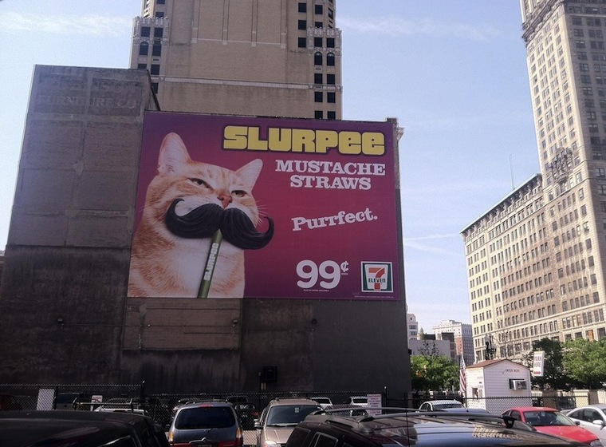

In April 2014, the first 7-Eleven store to operate in Detroit in eleven years opens on Jefferson Ave., east of downtown. In anticipation of its opening and the subsequent opening of a second store downtown, large banner ads featuring photo collages of different animals wearing Slurpee mustache straws appear on several downtown buildings, including one, featuring a cat, on the north exterior wall of the Julian C. Madison Building, 1420 Washington Blvd.
Before the ad's installation, Color Cubes, painted on the same wall in 1973, is painted over.
Curbed Detroit and Deadline Detroit both run stories over the next few days musing about the new ad versus the old mural, with Ben Duell Fraser wondering in Deadline Detroit, "So, have we lost a piece of our history, a slice of our culture? Is that what progress is about? Or does this indicate that Detroit is rejoining the ranks of cities with a downtown worth advertising on, and worth advertising to?"
The ad remains on the wall for just a few months. Its removal reveals a four story, grey-brown rectangle where Color Cubes used to be.
See COLOR CUBES , JULIAN C MADISON BUILDING , IMPERMANENCE , and URBAN RENEWAL